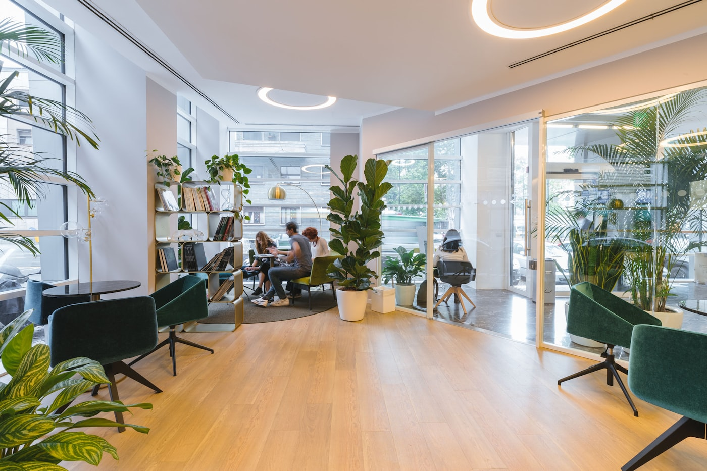

Commercial janitorial cleaning
Recurring janitorial service is the backbone of what we do. Nightly, weekly, or custom routes built around how a property actually operates — with QA inspections that keep standards honest over time. Includes day porter coverage where buildings need a visible, in-hours presence.

Office cleaning
Recurring service for office buildings and multi-tenant commercial properties — desks, common areas, restrooms, breakrooms.
Day porter
On-site daytime coverage for high-traffic lobbies, restrooms, and shared amenity areas.
Industrial & warehouse
Production, manufacturing, and warehouse facilities — heavier scopes, off-hours scheduling, clear scope sheets.
Medical & specialized
Medical facilities, showrooms, and education facilities with elevated cleanliness or compliance standards.
Need a recurring cleaning route, day porter coverage, or a cleaner transition from your current vendor?
Plan janitorial service